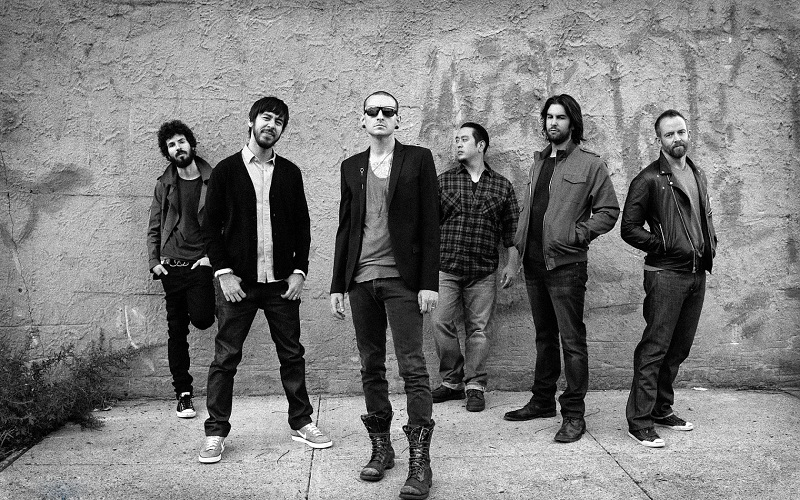

Crawling (One More Light Live)
专辑：《Crawling (One More Light Live)》
歌手：Linkin Park
作曲 : Linkin Park
There's something inside me that pulls beneath the surface
内心深处的某种东西正不断地撕扯着我
Consuming, confusing
声嘶力竭，混乱不安
This lack of self-control I fear is never-ending
而令我恐惧的失控却从未停止
Controlling, I can't seem
控制着我 似乎
To find myself again, my walls are closing in
再也无法找回自我 内心的墙壁步步逼近
I've felt this way before
这种感觉似曾相识
So insecure
如此令人不安！
Crawling in my skin
在我体表下蔓延的
These wounds they will not heal
是这些永不愈合的创伤
Fear is how I fall
堕落使我真正感到恐惧
Confusing what is real
恐惧亦使我混淆真实
Discomfort endlessly has pulled itself upon me
无休无尽的不安吞噬着我
Distracting, Reacting
心神不宁，手足无措
Against my will
对抗自己的意志
I'll stand beside my own reflection
我只能畏缩在自己倒影中
It's haunting
挥之不去
How I can't seem
为何我似乎
To find myself again, my walls are closing in
再也无法找回自我 内心的墙壁步步逼近
I've felt this way before
这似曾相识的感觉
So insecure
如此令人不安！
Crawling in my skin
在我体表下蔓延的
These wounds they will not heal
是这些永不愈合的创伤
Fear is how I fall
这让人恐惧的堕落
Confusing what is real
让我分不清虚实
Crawling in my skin
在我体表下蔓延的
These wounds they will not heal
是这些永不愈合的创伤
Fear is how I fall
这让人恐惧的堕落
Confusing, confusing what is real
让我分不清，分不清虚实